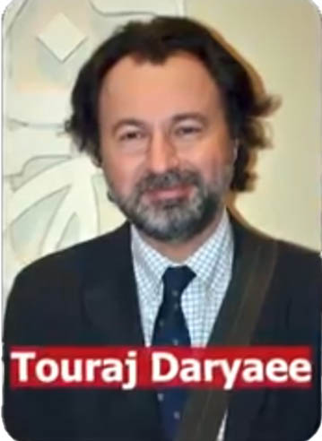
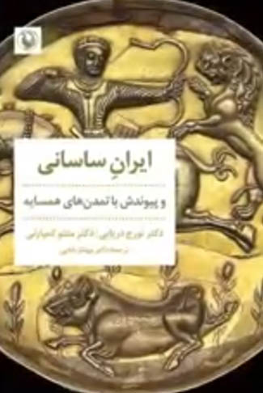
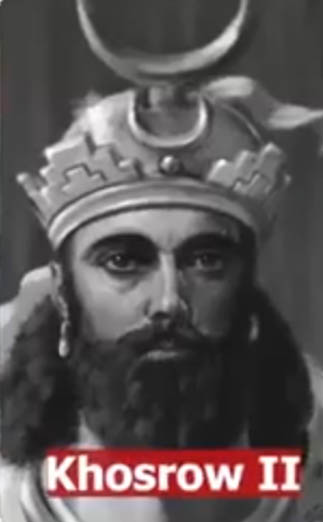
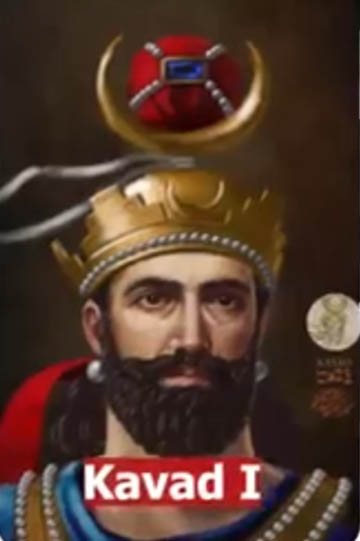
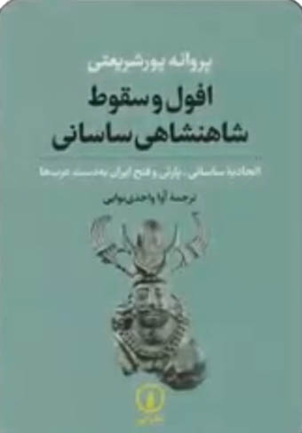
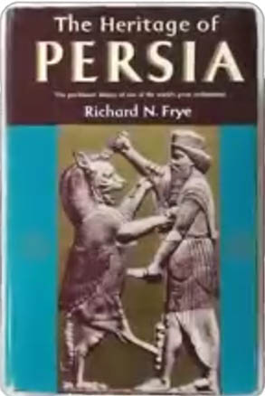
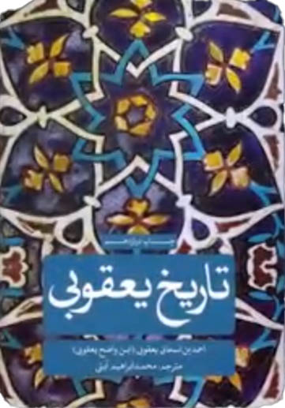
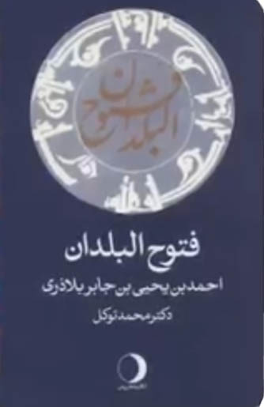
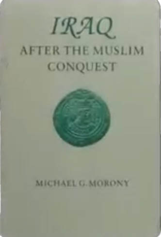
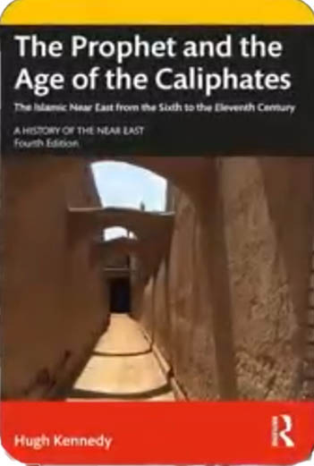

تورج دریایی استاد تاریخ دانشگاه کالیفرنیا در کتاب ایران ساسانی ظهور و سقوط یک امپراتوری میگه

خسرو پرویز ساله 628 میلادی توسط پسر بزرگش قباد کشته شد


نبرد قادسیه در سال 636 میلادی بود.
یعنی فقط 8 سال بعد از مرگ خسرو پرویز نه 35 سال
پروانه پور شریعتی استاد تاریخ خاورمیانه در دانشگاه نیویورک سیتی آمریکا

در کتاب افول امپراتوری علت شکست ساسانیان در قادسیه رو اختلافات شدید داخلی، فقر مردم ناشی از مالیات سنگین و ظلم به اونها می دونه.
ریچارد نلسون فرای ایران شناس برجسته آمریکایی در کتاب میراث باستانی

ایران میگه با برسی منابع اولیه مثل بلاذری و یعقوبی


هیچ منبع تاریخی اولیه ای نه عربی نه ساسانی نه ارمنی وجود نداره که مسلمانان دستوری برای اینکه بگیرید بکشید و تقسیم بکنید یا ممنوعیت دفن اجساد یا قرمان ساختن پل از جنازه ها را داده باشن وجود نداره و این داستان ها کاملا خیالی و ساختگی اند
مایکل جی مورنی تاریخ نگار برجسته آمریکایی در کتاب عراق پس از فتح مسلمانان میگه :

زنان ایرانی سهم غنیمت نبودن و بازاری به عنوان سوق الفارس وجود نداشته و ساختگیه.
و در هیچ منبع تاریخی نیومده که کودکان را با واحد راس شمارش می کردن و می فروختن و میگه : این داستان ها ساختگی اند و همچنین هیو نایجل کِنِدی تاریخ نگار برجسته بریتانیایی در کتاب پیامبر و خلافت ها میگه :

داستان سوزاندن کتاب های ایرانی ، تخریب معابد ذرتشتی و تبدیل اونها به اصطبل افسانه هایی هستن که اولین بار در قرن های 13 و 14 میلادی یعنی 600 سال بعد از قادسیه ظاهر شدن و در منابع مهم تاریخی وجود ندارن
و همچنین ادامه میده مردم ایران تا چندین قرن بعد از ورود اسلام زرتشتی بودند و تغییر دین تدریجی و داوطلبانه بود هیچ سندی حتی برای اجبار یک نفر به پذیرش اسلام در ایران وجود نداره.
مرگ امپراتوری ساسانی نه در قادسیه بلکه 8 سال قبل از اون و با کشته شدن خسرو پرویز به دست پسرش و آغاز زنجیره کودتا از درون اتفاق افتاد ، اونچه در قادسیه رخ داد فقط اعلام رسمی مرگ یک امپراتوری بود که دیگه مردمش از اون دفاع نمی کردن